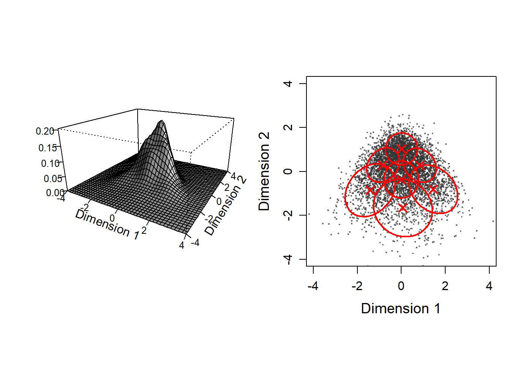
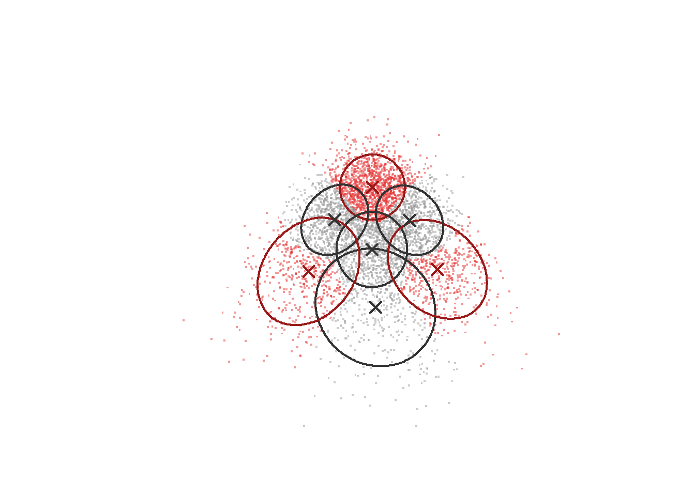

Illustration of how Gerlach’s method works for skewed data
These R scripts perfom simulations (“Case with distribution skew”) in Katahira et al. (Distribution of personality: types or skew?; Commentary: A robust data-driven approach identifies four personality types across four large data sets).
Preparation
Install the required package (if not yet) by the following commands.
install.packages("tidyverse")
install.packages("sn")
install.packages("reticulate")
install.packages("mixtools")
install.packages("ks")
install.packages("fields")
install.packages("mvtnorm")Also, please install Python to use scikit-learn library via reticulate library. (We recommend Anaconda dibribution https://www.anaconda.com/ , which contains scikit-learn library.)
Load library
library(tidyverse)
library(reticulate)
library(sn)
library(mixtools)
library(ks) # for kernel density estimation
library(fields) # for image.plot
library(mvtnorm)Synthesize data
First, samples are drawn from two independent skew-normal ditributions.
set.seed(1)
N <- 100000 # number of samples
# draw samples from univariate skew normal
x1 <- rsn(n = N, dp=c(-1, 1, 4))
x2 <- rsn(n = N, dp=c(-1, 1, -4))
dat <- cbind(x1,x2)Plot the samples.
par(pty = "s")
nplot <- 5000 # number of samples to plot
plot(c(-5,4),c(-5,3),type="n",ann=F)
x1seq <- seq(-2, 3, length=201)
x2seq <- seq(-5, 0, length=201)
# draw marginals
pd1 <- dsn(x1seq, dp=c(-1, 1, 4))
pd2 <- dsn(x2seq, dp=c(-1, 1, -4))
lines(x1seq, pd1 * 2 + 0.5,lwd = 2)
lines(-pd2 * 2 - 2.5, x2seq,lwd = 2)
# scatter plot
points(x1[1:nplot],
x2[1:nplot],
pch=".",cex = 2)Rotate the samples by 45 degrees.
# rotation matrix
theta <- -pi/4
R <- matrix(c(cos(theta), -sin(theta),
sin(theta), cos(theta)),
2,2,byrow = T)
df_data <- data.frame(scale(dat) %*% t(R))Plot the rotated data.
par(pty = "s")
plot(c(-5,6),c(-5,6),type="n",ann=F)
# draw marginals
d1 <- density(df_data$X1,from = -4, to = 3)
d2 <- density(df_data$X2,from = -4, to = 3)
lines(d1$x, d1$y*3+4,
xlim=c(-6,6), ylim=c(0,0.3),lwd = 2)
lines(d2$y*3+4, d2$x,
xlim=c(-6,6), ylim=c(0,0.3),lwd = 2)
# scatter plot
points(df_data$X1[1:nplot],
df_data$X2[1:nplot],
pch=".",cex = 2)Plot shuffuled data.
xdim <- ncol(df_data)
x.shuffeled <- matrix(0,N,xdim)
for (idx in 1:xdim)
x.shuffeled[,idx] <- df_data[sample(N),idx]
par(pty = "s")
plot(c(-5,6),c(-5,6),type="n",ann=F)
points(x.shuffeled[1:nplot,1],
x.shuffeled[1:nplot,2],
pch=".",cex = 2)
d1 <- density(x.shuffeled[,1],from = -4, to = 3)
d2 <- density(x.shuffeled[,2],from = -4, to = 3)
lines(d1$x, d1$y*3+4,
xlim=c(-6,6), ylim=c(0,0.3),lwd = 2)
lines(d2$y*3+4, d2$x,
xlim=c(-6,6), ylim=c(0,0.3),lwd = 2)Fitting GMMs
Following Gerlach et al., we choose initial parameters of GMMs from the results of K-means. If you select “random” initialization, the estimates will be different, suggesting that the GMM estimation for data of this kind is not robust.
sk <- reticulate::import(module = "sklearn")
klist <- 1:20 # number of components
n.rep <- 10 # number of runs from different intialization
biclog <- numeric(length(klist)) # to store BIC
gmm_list <- list() # to store GMM
for (idxk in klist){
K <- klist[idxk]
ll.min <- -Inf
cat("\nfitting GMM... K =", K)
for (idxrun in 1:n.rep) {
cat("*")
initpar <- "kmeans"
## uncomment if you want to include random intialization
# if (idxrun < n.rep*0.5)
# initpar <- "kmeans"
# else
# initpar <- "random"
sk_gmm <- sk$mixture$GaussianMixture
gmm <- sk_gmm(as.integer(K),
n_init = 1L,
max_iter = 200L,
init_params = initpar)
gmm$fit(df_data)
ll <- gmm$lower_bound_
if (ll > ll.min) {
ll.min <- ll
cluster.center <- data.frame(gmm$means_)
names(cluster.center) <- names(df_data)
biclog[idxk] <- gmm$bic(df_data)
gmm_list[[idxk]] <- gmm
}
}
}##
## fitting GMM... K = 1**********
## fitting GMM... K = 2**********
## fitting GMM... K = 3**********
## fitting GMM... K = 4**********
## fitting GMM... K = 5**********
## fitting GMM... K = 6**********
## fitting GMM... K = 7**********
## fitting GMM... K = 8**********
## fitting GMM... K = 9**********
## fitting GMM... K = 10**********
## fitting GMM... K = 11**********
## fitting GMM... K = 12**********
## fitting GMM... K = 13**********
## fitting GMM... K = 14**********
## fitting GMM... K = 15**********
## fitting GMM... K = 16**********
## fitting GMM... K = 17**********
## fitting GMM... K = 18**********
## fitting GMM... K = 19**********
## fitting GMM... K = 20**********Plot the locations of Gaussian components
Define a function for plotting cluster centers.
plot.cluster.center <- function(cluster.center) {
n.cluster <- nrow(cluster.center)
for (idxc in 1:n.cluster) {
points(x = cluster.center[idxc,1],
y = cluster.center[idxc,2],
pch = 4, cex = 1.5, col="red", lwd=2)
}
}Scatter plot of data with ellipses of Gaussian components.
par(mfrow=c(3,3), pty = "s",
mar=c(3.5, 3.5, 2, 1), mgp=c(2.4, 0.8, 0))
for (idxk in 1:8) {
plot(df_data$X1[1:nplot],
df_data$X2[1:nplot],"p",
pch = ".",
xlab="Dimension 1",
ylab="Dimension 2",
main=paste("K:", idxk))
for (idxc in 1:idxk) {
mixtools::ellipse(mu=gmm_list[[idxk]]$means_[idxc,],
sigma=gmm_list[[idxk]]$covariances_[idxc,,],
alpha = 1-.6827, # 1 sigma
npoints = 250, col="red")
}
plot.cluster.center(gmm_list[[idxk]]$means_)
}
Plot BIC
par(mgp=c(2, 1, 0), pty = "s")
plot(klist,biclog, type = "o",
xlab = "Number of clusters", ylab = "BIC", lwd = 2,
cex = 1.5,
cex.lab = 1.2,
cex.axis = 1.2)We select the GMM with seven components (K=7).
K.selected <- 7Evaluate clusters
Density estimation
Define a function ‘estkd’ for density estimation of original data and shuffled data
estkd <- function(x, xmin, xmax,
n.shuffle = 1000,
p.threshold = 0.01,
density.threhold = 0.05,
enrichment.threshold = 1.25) {
xdim <- ncol(x) # number of latent factors
N <- nrow(x)
# kernel density estiamtion of original data
Hpi <- ks::Hpi.diag(x = x, nstage = 2)
k <- ks::kde(x = x,verbose = TRUE, H = Hpi,
xmin = xmin,
xmax = xmax)
density.original <- k$estimate
# exceedance of original density
count_exceedance <- array(0, dim(density.original))
# shuffled data
cat("Density estimation for shuffled data...")
cat("\n 1/",n.shuffle, "\n")
for (idxs in 1:n.shuffle) {
if (idxs %% 100 == 0)
cat(idxs, " ")
fsc.s.shuffeled <- matrix(0,N,xdim)
for (idx in 1:xdim)
fsc.s.shuffeled[,idx] <- x[sample(nrow(x)),idx]
k.shuffle <- ks::kde(x = fsc.s.shuffeled, H = Hpi,
xmin = xmin,
xmax = xmax)
count_exceedance <- count_exceedance +
as.numeric(density.original < k.shuffle$estimate)
if (idxs == 1)
density.sum <- k.shuffle$estimate
else
density.sum <- density.sum + k.shuffle$estimate
}
d.shuffle <- density.sum / n.shuffle
p.value <- count_exceedance / n.shuffle
sig.region <- (p.value < p.threshold &
density.original > density.threhold &
density.original / d.shuffle > enrichment.threshold)
storage.mode(sig.region) <- "numeric"
list(k = k, # output of kde for original data
d.original = density.original,
count.exceedance = count_exceedance,
d.shuffle = d.shuffle,
p.value = p.value,
sig.region = sig.region)
}Prepare for plot.
xmin <- c(min(-5,min(df_data)),min(-5,min(df_data)))
xmax <- c(max(5,max(df_data)),max(4,max(df_data)))
# calculate density
ret <- estkd(df_data, xmin, xmax,
n.shuffle = 1000,
density.threhold = 0)## Density estimation for shuffled data...
## 1/ 1000
## 100 200 300 400 500 600 700 800 900 1000zlim_max <- max(ret$d.original)
zlim_min <- 0
cex.main <- 1.8
kd <- ret$kScatter plot of original data and density plot
par(mfrow=c(1,2), pty = "s")
par(mar=c(3.5, 3.5, 2, 1), mgp=c(2.4, 0.8, 0))
xlim <- c(-4, 4)
ylim <- c(-4, 4)
# Panel 1 (density)
image(kd$estimate,
x = kd$eval.points[[1]],
y = kd$eval.points[[2]],
xlab = "Dimension 1",
ylab = "Dimension 2",
xlim = xlim,
ylim = ylim,
col = viridis::viridis(10),
cex.axis = 1,
cex.lab = 1.2)
# Panel 2 (scatter plot)
plot(c(-4,4),c(-4,4),type="n",
xlab = "Dimension 1",
ylab = "Dimension 2",
xlim = xlim,
ylim = ylim,
cex.axis = 1,
cex.lab = 1.2)
points(df_data$X1[1:nplot],
df_data$X2[1:nplot],
col = rgb(0.2,0.2,0.2,alpha=0.7),
pch=".",
cex = 2)Plot densities of original data and shuffled data
par(mfrow=c(1,2), pty = "s")
par(mar=c(3.5, 3.5, 2, 1), mgp=c(2.4, 0.8, 0))
log.density.original <- log(pmax(kd$estimate, 0.00001))
log.density.shuffle <- log(pmax(ret$d.shuffle, 0.00001))
# Panel 1 (original data)
image(log.density.original,
x = kd$eval.points[[1]],
y = kd$eval.points[[2]],
xlab = "Dimension 1", ylab = "Dimension 2",
col = viridis::viridis(20),
cex.axis = 1.2, cex.lab = 1.5,
cex.sub = 1.2)
plot.cluster.center(gmm_list[[K.selected]]$means_)
title(main = sprintf("Original data"),
cex = 1.2, cex.main = cex.main)
# Panel 2 (shuffled data)
image(log.density.shuffle,
x = kd$eval.points[[1]],
y = kd$eval.points[[2]],
xlab = "Dimension 1", ylab = "Dimension 2",
col = viridis::viridis(20),
cex.axis = 1.2, cex.lab = 1.5,
cex.sub = 1.2)
title(main = sprintf("Null model"),
cex = 1.5, cex.main = cex.main)Plot enrichment
color.palette = colorRampPalette(
c("#0080ff","white","#ff8000"))
er <- exp(log.density.original - log.density.shuffle)
par(pty="s")
image.plot(kd$eval.points[[1]],
kd$eval.points[[2]],
pmax(pmin(er,1.5),0.5),
col = color.palette(30),
zlim = c(0.5,1.5),
xlab="Factor 1", ylab="Factor 2",
cex.axis = 1.2, cex.lab = 1.2,cex.sub = 1.2
)
plot.cluster.center(gmm_list[[K.selected]]$means_)
title(main = sprintf("Enrichment"),
cex = 1.8, cex.main = cex.main)p-value and enrichment thresholded
par(pty="s")
# p-value (p < .01)
image(kd$eval.points[[1]],
kd$eval.points[[2]],
z = (ret$p.value < .01),
col = c( rgb(0, 0, 0, alpha=0.0),
rgb(0.2,0.2, 0.2, alpha=0.5)),
xlim = c(-5,5),
ylim = c(-5,4.5),
zlim = c(0,1),
xlab = "Dimension 1", ylab = "Dimension 2",
cex.axis = 1.5, cex.lab = 1.5
)
# enrichment (> 1.25)
image(kd$eval.points[[1]],
kd$eval.points[[2]],
z = exp(log.density.original - log.density.shuffle) > 1.25,
col = c( rgb(0, 0, 0, alpha=0.0),
rgb(0, 0, 0.8, alpha=0.5)),
zlim = c(0,1),
add = T
)
plot.cluster.center(gmm_list[[K.selected]]$means_)Plot 3d density of GMM and and scatter disribution with GMM contours
par(mfrow=c(1,2), pty = "s")
par(mar=c(3.5, 3.5, 2, 1), mgp=c(2.4, 0.8, 0))
x <- seq(-4,4, by =0.2)
y <- seq(-4,4, by =0.2)
grid <- expand.grid(x1 = x, x2 = y)
d <- matrix(0, nrow = length(x),
ncol = length(y))
for (idxc in 1:klist[K.selected]) {
d <- d + gmm_list[[K.selected]]$weights_[idxc] *
matrix(dmvnorm(
cbind(grid$x1, grid$x2),
mean = gmm_list[[K.selected]]$means_[idxc,],
sigma = gmm_list[[K.selected]]$covariances_[idxc,,]),
nrow = length(x),
ncol = length(y))
}
persp(x, y, d,
theta=30,
phi=20, expand=0.5,
ticktype="detailed",
ltheta = 120, shade = 0.75,
xlab = "Dimension 1",
ylab = "Dimension 2",
xlim = xlim,
ylim = ylim,
zlab = "",
cex.axis = 0.8
)
plot(df_data$X1[1:nplot],
df_data$X2[1:nplot],
"p",
col = rgb(0.2,0.2,0.2,alpha=0.7),
pch=".",
xlim = xlim,
ylim = ylim,
xlab="Dimension 1",
ylab="Dimension 2",
cex = 2,
cex.axis = 1,
cex.lab = 1.2)
for (idxc in 1:klist[K.selected]) {
mixtools::ellipse(mu=gmm_list[[K.selected]]$means_[idxc,],
sigma=gmm_list[[K.selected]]$covariances_[idxc,,],
alpha = 1-.6827, # 1 sigma
npoints = 250, col="red", lwd =2)
}
plot.cluster.center(gmm_list[[K.selected]]$means_)
Evaluate each cluter center
Define function for evaluate each cluter center
# Input：
# x, # data matrix (factor scores) (respondent x dimension)
# c.center, cluster center matrix (cluster center x dimension)
# n.shuffle = 1000 number of shuffles
#
# Output:
# $d.original # density of original data
# $d.null # mean density of null model
# $p.value # p-value
# $enrichment # = d.original/d.null
eval_component <- function(x, c.center, n.shuffle = 1000) {
xdim <- ncol(x)
N <- nrow(x)
n.component <- nrow(c.center)
p.value <- numeric(n.component)
enrichment <- numeric(n.component)
cat("Bandwidth selection...\n")
Hpi <- ks::Hpi.diag(x = x[1:min(N,1000),],
nstage = 2)
cat("kernel dinsity estimation for original data...\n")
k <- ks::kde(x = x, H = Hpi,
eval.points = c.center,
binned = FALSE)
density.original <- k$estimate
density.shuffle <- matrix(0, n.shuffle, nrow(c.center))
cat("kernel dinsity estimation for shuffled data...\n")
for (idxs in 1:n.shuffle) {
if (idxs %% 10 == 1)
cat("=")
sc_shuffeled <- apply(x, MARGIN = 2, sample)
k <- ks::kde(x = sc_shuffeled, H = Hpi,
eval.points = c.center,
binned = TRUE) # should be FALSE if the number of dimension >= 4
density.shuffle[idxs,] <- k$estimate
}
cat("\n")
density.null <- colMeans(density.shuffle)
for (idx in 1:n.component) {
p.value[idx] <- sum(density.original[idx] < density.shuffle[,idx]) / n.shuffle
enrichment[idx] <- density.original[idx] /
density.null[idx]
d.null.mean <- mean(density.shuffle[,idx])
}
list(d.original = density.original,
d.null = density.null,
p.value = p.value,
enrichment = enrichment )
}Evaluate clusters (Gaussian components).
res_ec <- eval_component(df_data,
gmm_list[[K.selected]]$means_)## Bandwidth selection...
## kernel dinsity estimation for original data...
## kernel dinsity estimation for shuffled data...
## ====================================================================================================# FALSE: not meaningful, TRUE: meaningful
flg_meaningful <- (res_ec$p.value < 0.01 &
res_ec$enrichment > 1.25)
# 1: not meaningful,2: meaningful
idx_meaningful <- flg_meaningful + 1 Calculate the fraction of samples classified into each cluster.
cluster_labels <- apply(gmm_list[[K.selected]]$predict_proba(df_data),1,which.max)
(tb <- table(cluster_labels))## cluster_labels
## 1 2 3 4 5 6 7
## 4707 27391 16805 16528 9212 8866 16491cat("Fraction of samples classified into one of the meaningful clusters:",
sum(tb[flg_meaningful])/sum(tb))## Fraction of samples classified into one of the meaningful clusters: 0.45469Plot clusters with meaningful clusters being colored differently
par(pty = "s")
par(mar=c(3.5, 3.5, 2, 1), mgp=c(2.4, 0.8, 0))
col.ellipse <- c("gray20",rgb(0.6,0.1,0.1,alpha=1))
colpoint <- c(rgb(0.6,0.6,0.6,alpha=0.5),
rgb(0.9,0.2,0.2,alpha=0.5) # meaningful cluster
)
plot(df_data$X1[1:nplot],
df_data$X2[1:nplot],
"p",
col = colpoint[idx_meaningful[cluster_labels[1:nplot]]],
pch=".", bty="n", xaxt="n", yaxt="n",
xlab = "", ylab = "",
xlim = xlim, ylim = ylim,
cex = 2, cex.axis = 1, cex.lab = 1.2)
for (idxc in 1:klist[K.selected]) {
mixtools::ellipse(mu=gmm_list[[K.selected]]$means_[idxc,],
sigma=gmm_list[[K.selected]]$covariances_[idxc,,],
alpha = 1-.6827, # 1 sigma
npoints = 250, col=col.ellipse[idx_meaningful[idxc]], lwd =2)
}
plot.cluster.col <- function(cluster.center, col) {
idxk <- nrow(cluster.center)
for (idxc in 1:idxk) {
points(x = cluster.center[idxc,1],
y = cluster.center[idxc,2],
pch = 4, # "+"
cex = 1.5,
col=col[[idxc]], lwd=2)
}
}
plot.cluster.col(gmm_list[[K.selected]]$means_, col.ellipse[idx_meaningful])